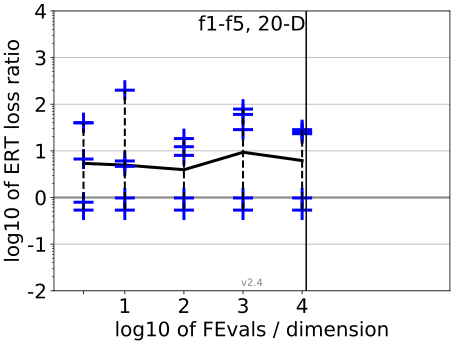
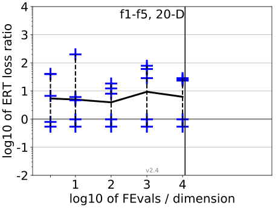

All functions in 5-D and 20-D
f1–f24 in 5-D, maxFE/D=1.00e6
| #FEs/D | best | 10 % | 25 % | med | 75 % | 90 % |
|---|---|---|---|---|---|---|
| RLUS/D | 1e6 | 1e6 | 1e6 | 1e6 | 1e6 | 1e6 |
| 2 | 0.70 | 1.4 | 1.7 | 2.7 | 4.2 | 10 |
| 10 | 0.70 | 1.5 | 2.6 | 3.3 | 4.8 | 14 |
| 100 | 0.46 | 0.97 | 3.1 | 4.9 | 7.8 | 16 |
| 1e3 | 0.54 | 0.97 | 1.6 | 4.5 | 11 | 21 |
| 1e4 | 0.27 | 0.89 | 1.1 | 2.8 | 6.2 | 11 |
| 1e5 | 0.27 | 0.89 | 1.1 | 2.8 | 6.0 | 11 |
| 1e6 | 0.27 | 0.89 | 1.1 | 2.8 | 6.2 | 11 |
f1–f24 in 20-D, maxFE/D=1.00e6
| #FEs/D | best | 10 % | 25 % | med | 75 % | 90 % |
|---|---|---|---|---|---|---|
| RLUS/D | 1e6 | 1e6 | 1e6 | 1e6 | 1e6 | 1e6 |
| 2 | 0.54 | 0.98 | 7.3 | 17 | 40 | 40 |
| 10 | 0.54 | 4.3 | 7.5 | 24 | 2.0e2 | 2.0e2 |
| 100 | 0.54 | 2.2 | 6.0 | 11 | 19 | 2.7e2 |
| 1e3 | 0.54 | 1.1 | 4.1 | 14 | 52 | 1.7e2 |
| 1e4 | 0.54 | 2.4 | 3.2 | 15 | 28 | 3.8e2 |
| 1e5 | 0.54 | 1.5 | 2.9 | 15 | 45 | 1.5e3 |
| 1e6 | 0.54 | 1.5 | 2.9 | 13 | 88 | 1.2e3 |
| 1e7 | 0.54 | 1.5 | 2.9 | 21 | 1.4e2 | 2.4e3 |
Separable functions in 5-D and 20-D
Misc. moderate functions in 5-D and 20-D
Ill-conditioned functions in 5-D and 20-D
Multi-modal functions in 5-D and 20-D
Weak structure functions in 5-D and 20-D
ERT loss ratios (see the previous figure for details). Each cross (+) represents a single function, the line is the geometric mean.

{kind=link}
{kind=link}
{kind=link}
{kind=link}
{kind=link}
{kind=link}
{kind=link}
{kind=link}
{kind=link}